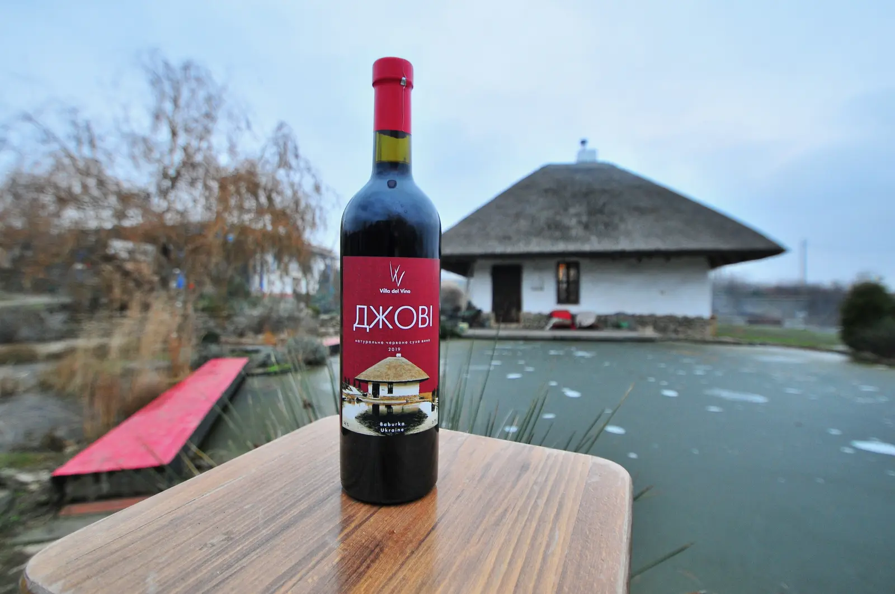
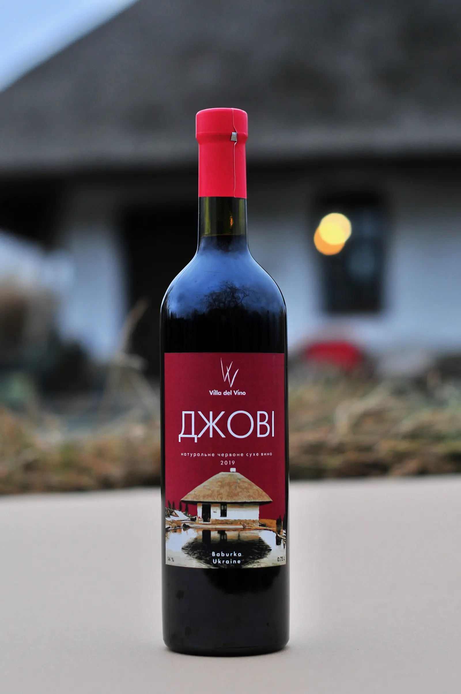
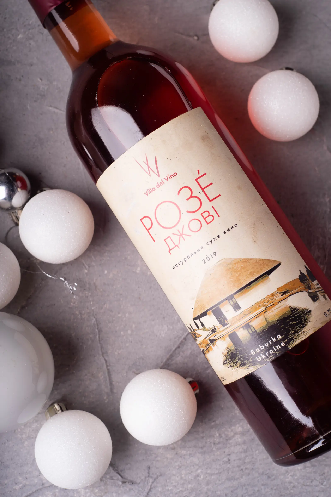
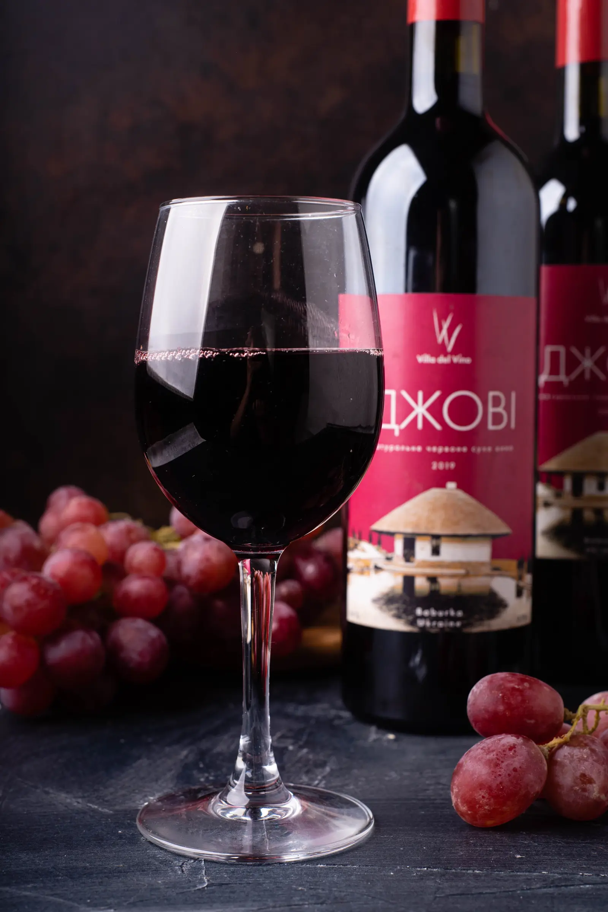
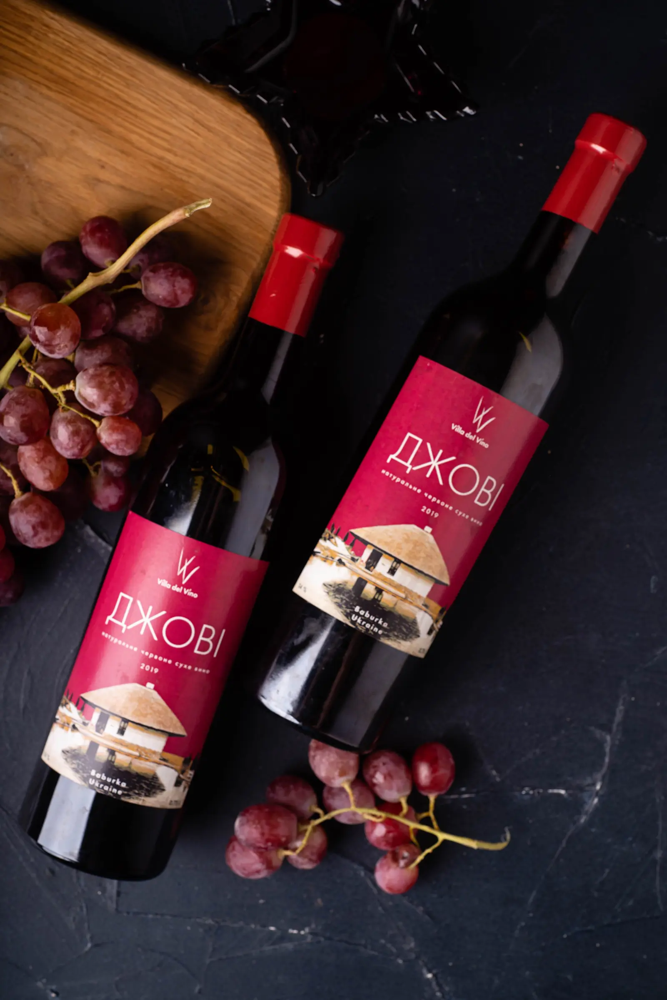
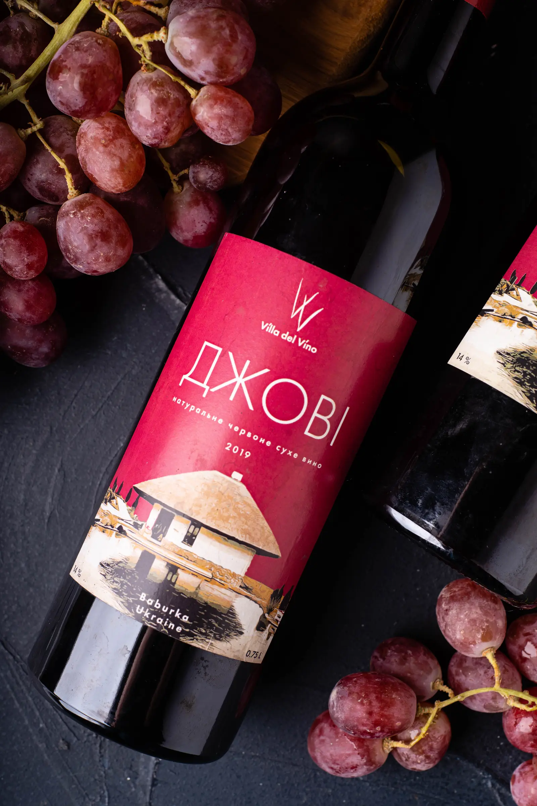

Вина Villa Del Vino виробляються з виплеканого степовим сонечком винограду, що росте на високих берегах Старого Дніпра неподалік села Бабурка, названого на честь засновника — козацького полковника Івана Бабури.

Основу виробництва складають сухі вина сорту Джові (Юпітер): рожеві червоні насичені та купажні вина. Певною мірою представлені деякі інші сорти винограду.

Вино достатньо гастрономічне.
Ідеально пасує до тайської кухні, гострих та пряних страв.

Чудово пасує до фруктів, легких сирів.
Ідеально підходить у якості аперитиву.

Вино збалансоване, з чудовою структурою.
Ідеально підходить до страв з птиці: до печеної качки або курки в пряному соусі.

Ідеально пасує до стейків.

Ідеально пасує до червоного м'яса або витриманих сирів.